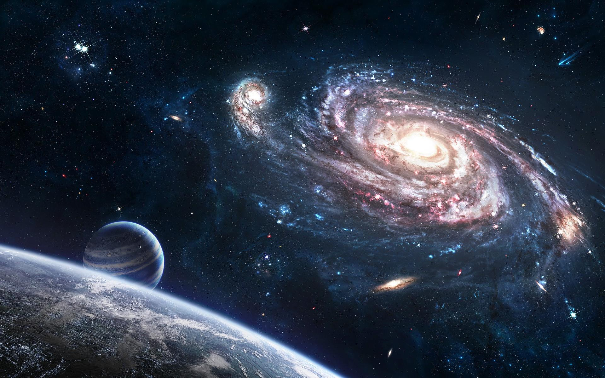

Общие сведения о космосе
В наше время всякому образованному человеку необходимо знать, что такое космос, и иметь представление о происходящих в космосе процессах. Прежде чем перейти к изложению современных представлений о космосе, выясним значение самого слова "космос". "Космос" по-гречески - это порядок, устройство, стройность (вообще, нечто упорядоченное). Философы Древней Греции понимали под словом "космос" Мироздание, рассматривая его как упорядоченную гармоничную систему. Космосу противопоставлялся беспорядок, хаос. Для древних греков понятия порядка и красоты в явлениях природы были тесно связаны. Эта точка зрения держалась в философии и науке долго; недаром даже Коперник считал, что орбиты планет должны быть окружностями лишь потому, что окружность красивее эллипса. В понятие "космос" сначала включали не только мир небесных светил, но и все, с чем мы сталкиваемся на поверхности Земли. Знаменитый естествоиспытатель XIX в. Александр Гумбольдт создал фундаментальный труд "Космос" (5 томов, 1845-62), суммировавший все, что тогда было известно о природе .
- Луна и планеты. Пространство между планетами заполнено плазмой очень малой плотности, которую несет солнечный ветер. Характер взаимодействия плазмы солнечного ветра с планетами зависит от того, имеют или нет планеты магнитное поле. Магнитные поля Юпитера и Сатурна значительно сильнее земного поля, поэтому магнитосферы этих планет-гигантов значительно протяженнее земной магнитосферы. Наоборот, магнитное поле Марса настолько слабо (в сотни раз слабее земного), что с трудом сдерживает налетающий поток солнечного ветра на самых ближних подступах к поверхности планеты. Примером немагнитной планеты является Венера, полностью лишенная магнитосферы. Однако взаимодействие сверхзвукового потока плазмы солнечного ветра с верхней атмосферой Венеры и в этом случае приводит к образованию ударной волны.
Большим разнообразием отличается семейство естественных спутников планет-гигантов. Один из спутников Юпитера, Ио, является самым активным в вулканическом отношении телом Солнечной системы. Титан, самый крупный из спутников Сатурна, обладает достаточно плотной атмосферой, едва ли не сравнимой с земной. Весьма необычным является и взаимодействие таких спутников с окружающей их плазмой магнитосфер материнских планет. Кольца Сатурна, состоящие из каменных и ледяных глыб разных размеров, вплоть до мельчайших пылинок, можно рассматривать как гигантский конгломерат миниатюрных естественных спутников. По очень вытянутым орбитам вокруг Солнца движутся кометы . Ядра комет состоят из отдельных камней и пылевых частиц, вмороженных в глыбу льда. Лед этот не совсем обычный, в нем кроме воды содержатся аммиак и метан. Химический состав кометного льда напоминает состав самой большой планеты - Юпитера. Когда комета приближается к Солнцу, лед частично испаряется, образуя гигантский газовый хвост кометы. Кометные хвосты обращены в сторону от Солнца, т. к. постоянно испытывают воздействие давления излучения и солнечного ветра.